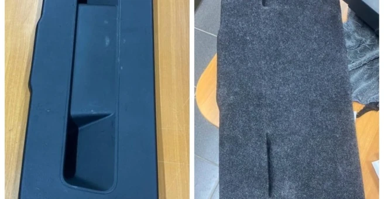
01Перетяжка багажника
Боковые панели, крышки и ниши. Обсудим материал, фактуру и объём отделки под ваш автомобиль.
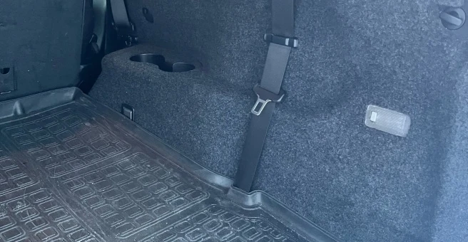
Обновим отделку багажника и деталей салона. Шумоизоляция, утепление, плёнка и работы с автомобилем — обсудим вашу задачу.
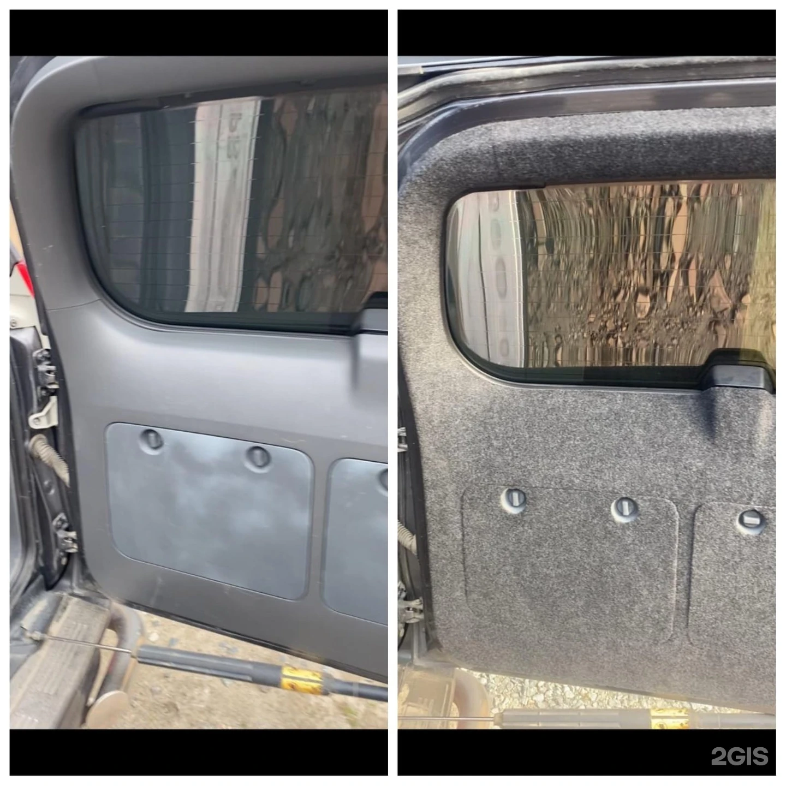
Собственная работа мастерской / до и послеИдеальный багажник
Пластиковые боковины, крышки и ниши формируют вид багажного отделения. Перетяжка помогает обновить их поверхность и собрать интерьер в единое целое.
В мастерской в Сургуте занимаются перетяжкой багажника и салона, ремонтом отделки, шумоизоляцией и другими работами с автомобилем. Начните с фотографии детали и желаемого результата.
Рассмотреть отделку крупнее01 / Услуги
Перетяжка, комфорт и работы с автомобилем. Выберите направление — уточним детали.

01Боковые панели, крышки и ниши. Обсудим материал, фактуру и объём отделки под ваш автомобиль.
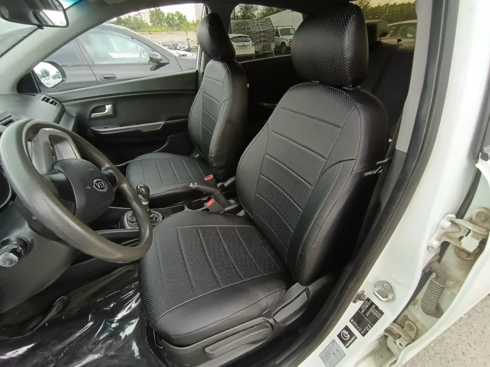
02Иллюстрация услугиОбновление обивки и отдельных элементов интерьера. Подберём направление работы по состоянию и пожеланиям.
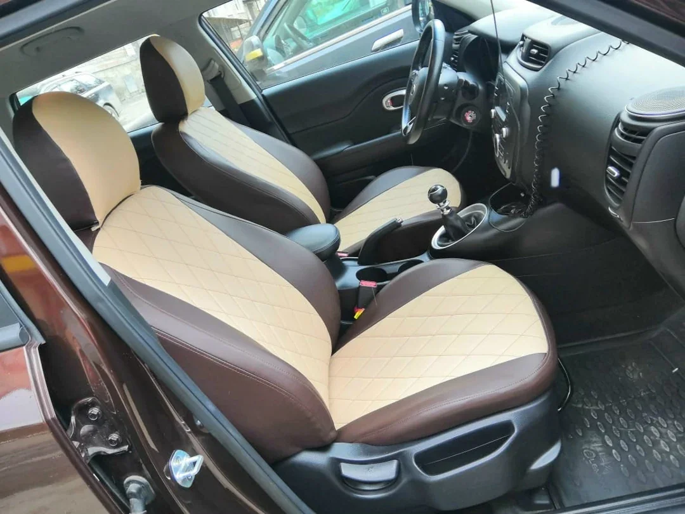
03Иллюстрация услугиРаботы с внутренней отделкой автомобиля. Пришлите фото повреждения — уточним возможный состав восстановления.
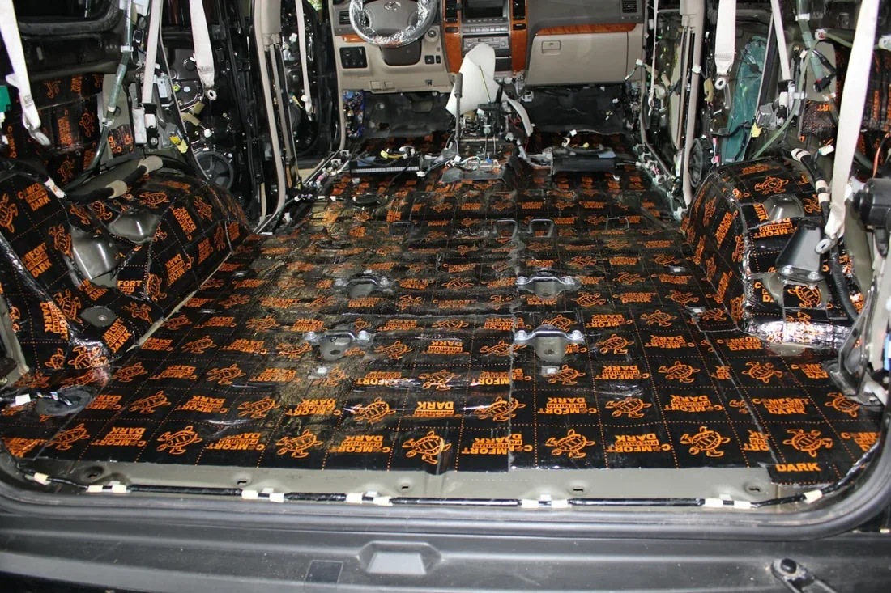
04Иллюстрация услугиРаботы по шумоизоляции автомобиля. Зоны обработки и объём обсуждаются под модель и вашу задачу.
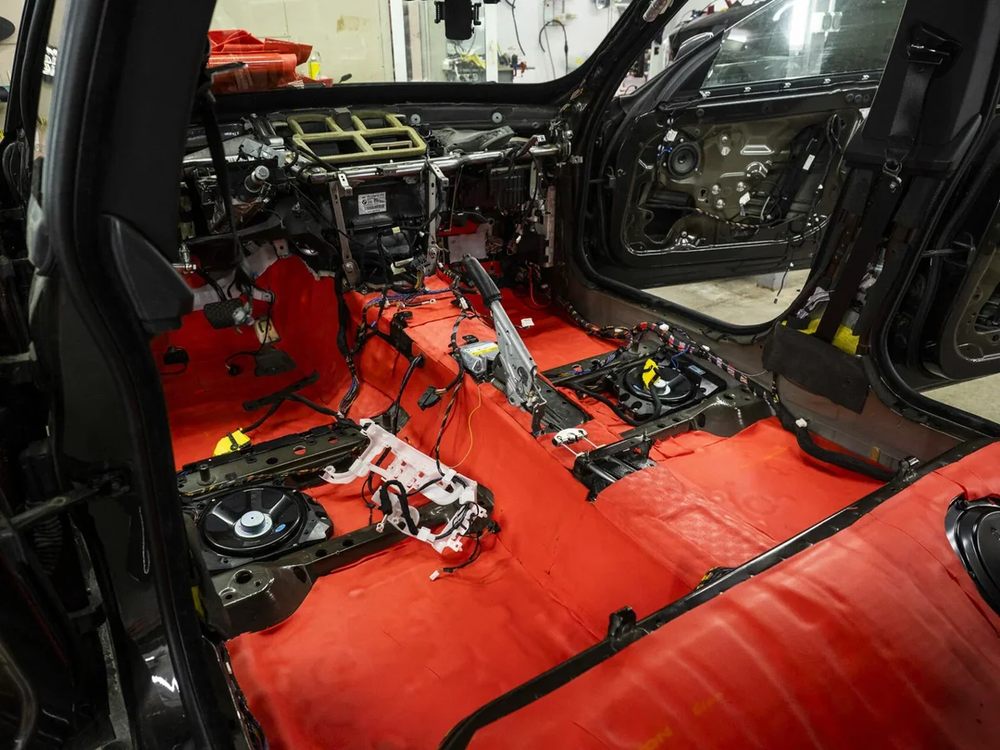
05Иллюстрация услугиУтепление внутреннего пространства автомобиля. Обсудим, какие зоны и материалы подходят для вашей машины.
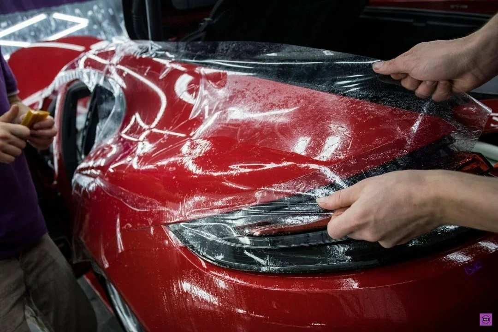
06Иллюстрация услугиРаботы с автомобильной плёнкой. Уточним поверхность, материал и желаемый внешний вид.
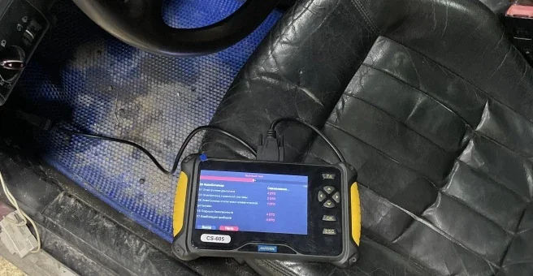
07Иллюстрация услугиПроверка электронных систем и поиск причины ошибки. При обращении расскажите о симптомах и поведении автомобиля.
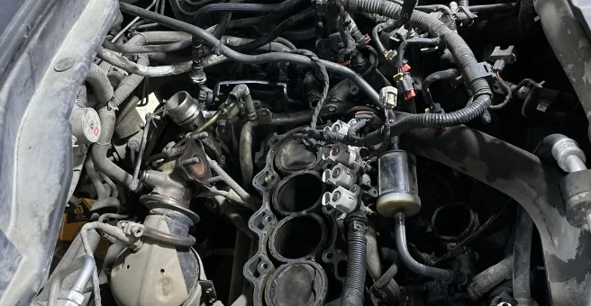
08Иллюстрация услугиРаботы с бензиновыми двигателями. Необходимый объём ремонта определим после обсуждения неисправности и диагностики.
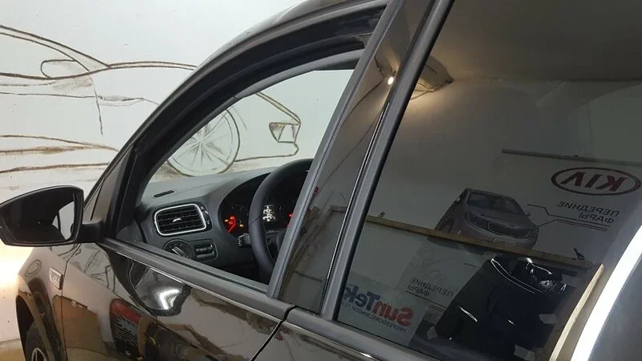
09Иллюстрация услугиРаботы с автомобильными стёклами. Пришлите фотографию и укажите модель — уточним возможное решение.
Фотографии с отметкой «Иллюстрация услуги» показывают направление работ. Собственные работы мастерской — в галереях ниже.
Подход к работе
Начинаем с того, что вы хотите изменить: боковину, крышку, нишу или несколько элементов.
Материал и цвет обсуждаем с учётом интерьера и желаемого вида багажника.
Уточняем форму деталей, отверстия, крепления и доступ к нужным зонам.
До работы обсуждаем состав, стоимость и срок. Для точной оценки может потребоваться осмотр.
02 / Стоимость
Стоимость зависит от автомобиля, площади и формы деталей, материала и объёма работ. Пришлите фотографии — обсудим исполнение и необходимые действия.
Узнать стоимостьТочная стоимость и срок согласовываются индивидуально. Для ремонта и диагностики может потребоваться осмотр автомобиля.
| Что уточним | Для расчёта |
|---|---|
| Автомобиль | Марка, модель и год |
| Детали | Какие элементы нужно обтянуть |
| Отделка | Материал, цвет и фактура |
| Что уточним | Для расчёта |
|---|---|
| Задача | Какие изменения нужны |
| Зоны | Салон, отдельные поверхности |
| Объём | Материал и состав работы |
| Что уточним | Для расчёта |
|---|---|
| Симптомы | Что произошло с автомобилем |
| Состояние | Фотографии или результаты осмотра |
| Решение | Необходимый ремонт и материалы |
03 / Работы мастерской
Собственные фотографии «Идеального багажника». Переключайте кадры «до» и «после» или откройте галерею.
Пластиковая поверхность детали до работы и текстильная обивка после.
Ниша багажника показана до и после обивки.
Примеры перетяжки боковых элементов багажника.
Отдельная деталь багажника в процессе обновления отделки.
04 / Детали багажника
Обновление обивки начинается с конструкции детали: её изгибов, краёв и вырезов. Эти особенности видны в каждой работе.
Обсудить ваш багажникПанели и поверхности по сторонам багажного отделения.
Отдельные элементы, которые можно обновить вместе или по одному.
Объёмные детали с собственной формой и особенностями отделки.
От обращения к работе
Пришлите фото багажника, детали или повреждения. Укажите марку, модель и год автомобиля.
Уточним материал, объём, стоимость и сроки. Для технических работ начнём с симптомов.
Выберем время приезда в мастерскую: Сургут, Профсоюзов, 47 к5, ГК «Градостроитель-17».
Клиенты о работе
«Перетянул багажник на Хайлендер, получилось отлично, Супер.»
Перетяжка багажника Highlander
Читать отзыв в 2ГИС«Обшивка багажника очень кропотливо сделана.»
Обивка багажника
Читать отзыв в 2ГИС«Все было сделано быстро, качественно, аккуратно.»
Перетяжка багажника
Читать отзыв в 2ГИСПеред обращением
Начните с модели автомобиля и того, что хотите изменить. Остальные детали обсудим вместе.
Да, обсудить можно как отдельную накладку, крышку или панель, так и несколько элементов. Пришлите фотографии и укажите модель автомобиля.
Покажите детали и расскажите, какой результат хотите получить. Цена зависит от размера, формы, материала и объёма работы. Точная сумма и срок согласовываются индивидуально.
Материал, цвет и фактуру нужно согласовать с мастером под конкретную задачу. На собственных фотографиях мастерской показаны варианты текстильной обивки пластиковых деталей.
В направлениях мастерской указаны перетяжка и ремонт салона, шумоизоляция, утепление, нанесение плёнки, компьютерная диагностика, ремонт бензиновых двигателей и работы с автостёклами. Возможность конкретной работы уточняйте при обращении.
Да. В контактах есть ссылка на Telegram и форма, которая подготавливает сообщение. Фотографии добавьте в чате перед отправкой.
Сургут, улица Профсоюзов, 47 к5, ГК «Градостроитель-17». Перед поездкой позвоните или напишите, чтобы согласовать время приезда.
05 / Обсудить работу
Или расскажите о другой задаче по автомобилю. Уточним детали и договоримся о следующем шаге.
+7 (922) 415‑12‑83Перед приездом согласуйте время по телефону или в Telegram.